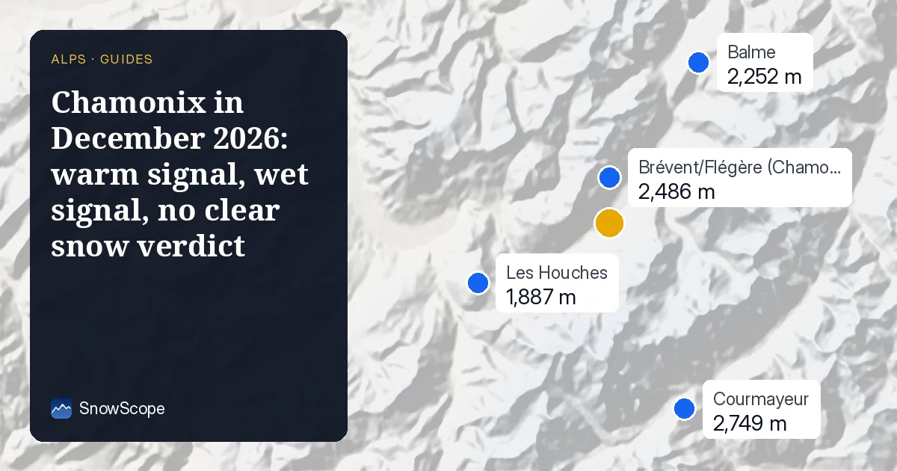
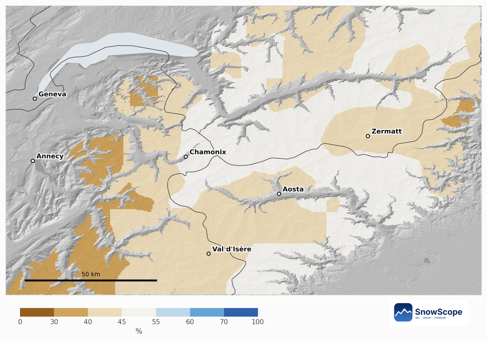
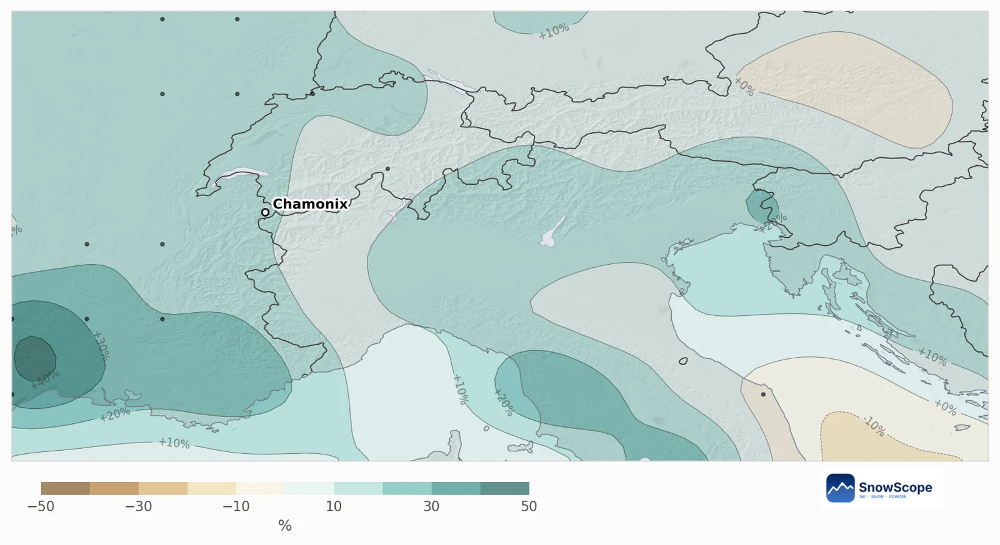
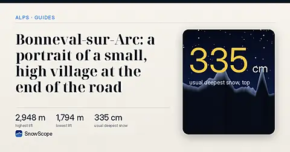

Chamonix in December 2026: warm signal, wet signal, no clear snow verdict
Chamonix's upper peaks woke to 27 cm on 10 November, yet the mid-mountain station holds just 1 cm and the base is bare. The seasonal forecast for December tilts warm and slightly wet, but these two forces nearly offset each other—the month should track close to its usual snow total.
See the live snow forecast for Chamonix in the SnowScope appSnow depth, powder alerts and the 3D map, free.

Height decides the picture now
Early November snow clings only where it is cold. The Grands Montets top at 2768 m has 27 cm after 15 cm fell in the previous week. Drop 800 metres to mid-mountain (2001 m) and you find just 1 cm, despite 10 cm arriving in the same seven days. The base at 1234 m shows nothing.
This is the story of a high snow line. On the SnowScope map, 47 per cent of the 60 km window around Chamonix is white—the Mont Blanc massif and the high Valais side—but the valleys remain bare. The next seven days could push another 26 cm into the top zone and 5 cm to mid-mountain.
No clear pattern in the mountains yet
When SnowScope compares each mountain patch with its own past 24 Decembers, most areas around Mont Blanc show no strong signal. Eighty-six per cent of the terrain lacks a clear trend. Fourteen per cent leans lean (mainly lower Pre-Alps near Annecy), and nowhere stands out as naturally snowier.
At mid-mountain height, the chance of more fresh snow than in a typical December is 45 per cent. A normal December brings 68 cm of new snow there; this year's outlook suggests 66 cm. By 31 December, the typical depth is 92 cm and the forecast depth 85 cm, most likely between 71 and 103 cm.

Warmth and moisture in a tug of war
The European seasonal system's 51 runs agree strongly on one thing: December will run warm. The average warming across the region is 1.6 °C above normal, with 84 per cent of runs warmer. Precipitation is 11 per cent wetter than the usual 128 mm, favoured by 65 per cent of the ensemble.
These signals pull in different directions. High altitude keeps precipitation as snow; lower elevations pay the price of a warmer month in the form of rain and a rising snow line. In Chamonix's past 45 Decembers, snow depth here has tracked precipitation far more closely (correlation 0.94) than temperature, which is why the forecast lands near normal—the two effects largely cancel.


Three Decembers that felt like this
The three past Decembers whose weather most closely matched this forecast are 2002, 2022 and 2014. Yet those three were not alike for snow. That honesty is important: the forecast tilts the odds only slightly; it does not lock in the month's outcome.
The key lesson is variability. Warm years do not always mean lean snow once wetness is factored in. Plan on the high terrain first—the Grands Montets top and the glacier approaches—and treat lower runs as a bonus. Consult the 7-day forecast before you decide on travel.

What to watch in the weeks ahead
Early December hangs in balance. The thin coverage at mid-mountain could consolidate, or December's warmth could push the rain line higher. The difference between a good month and a lean one may hinge on whether December leans more towards the warmth or the wetness in its first fortnight.
Use the SnowScope map to track the snow line as the 7-day forecast evolves. That layer will tell you more about which valley runs are skiable than any single seasonal forecast can.
Tips for skiers
- Start your December days on the Grands Montets top and the glacier terrain; the high altitude locks in the best snow odds.
- Watch the 7-day forecast closely for rain-line shifts. A warm spell mid-month could push rain higher and shrink mid-mountain cover.
- The outlook spans 71 to 103 cm by month's end at mid-mountain; use the bottom of that range to plan conservatively early, the top as it unfolds.
- Before you book late December, compare the 7-day forecast at that time to this seasonal view. Seasonal forecasts are guides, not guarantees.
- Layer the SnowScope snow depth map each week to see where the snow line settles as December progresses.
About these numbers
Resort snow depths are the deepest snow on the resort's upper slopes on the date shown; they are estimates for an area, not a measurement at one point. Forecasts can change. Always read the official avalanche bulletin before going off-piste.
Cite this report
For research, teaching or the press: the numbers and charts are free to reuse under CC BY 4.0 with this citation.
SnowScope (2026), Chamonix in December 2026: warm signal, wet signal, no clear snow verdict, https://snowscope.app/blog/en/2026/11/chamonix-december-2026-snow-outlook.html, accessed 2026-11-10
SnowScope (Atlas Labs). (2026, November 10). Chamonix in December 2026: warm signal, wet signal, no clear snow verdict. SnowScope snow reports. https://snowscope.app/blog/en/2026/11/chamonix-december-2026-snow-outlook.html
BibTeX
@misc{snowscope2026chamonixdecember2026snow,
author = {{SnowScope (Atlas Labs)}},
title = {Chamonix in December 2026: warm signal, wet signal, no clear snow verdict},
year = {2026},
month = nov,
howpublished = {\url{https://snowscope.app/blog/en/2026/11/chamonix-december-2026-snow-outlook.html}},
note = {Published 2026-11-10 09:29 UTC; accessed 2026-11-10}
}· CC BY 4.0 · Methods, data and tools →
Follow Chamonix
Free: a message when fresh snow is coming, and the forecast every morning.
More snow reports

When to book Courchevel and the 3 Vallées, which village to stay in and where the snow lasts, planned from 46 past winters of snow data.

Bonneval-sur-Arc sits at 1,794 m in the high Arc valley, closed off by the Iseran in winter. Snow depth ranges from 99 cm at base to 335 cm at the top. Data from 46 past winters, November 2026.

From Walser farmers to the White Ring: the dates that made Lech Zürs, followed by our snow record then and now, the first fifteen of 46 past winters against the last fifteen.